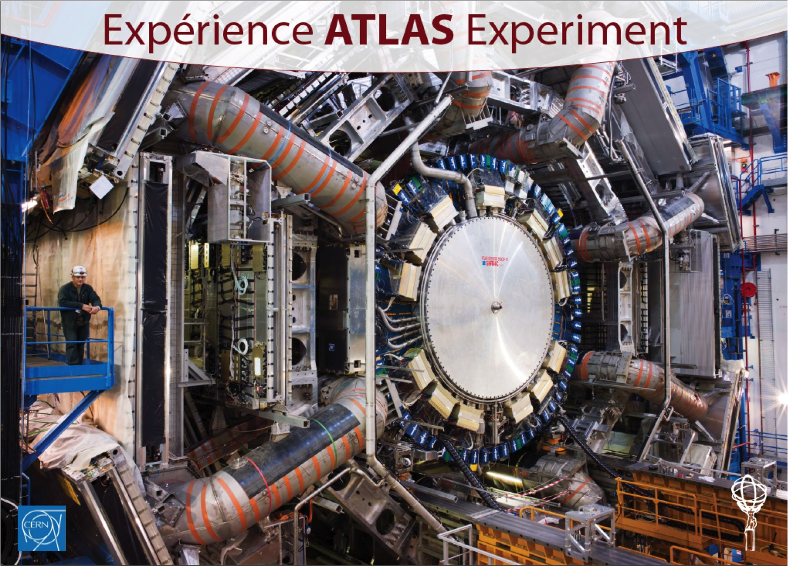

EDUSAFE is a 4-year Marie Curie ITN project that provides training
for 10 Early Stage Researchers and 2 Experienced Researchers. The
project focuses on research into the use of Virtual Reality (VR) and
Augmented Reality (AR) during planned and emergency maintenance in
extreme environments (nuclear installations, space, deep sea etc).
The scientific objective of EDUSAFE is research into advanced VR
and AR technologies for a personnel safety system platform, including
features, methods and tools. Current technology is not acceptable
because of significant time-lag in communication and data
transmission, missing multi-input interfaces, and simultaneous
supervision of multiple workers who are working in the extreme
environment. The aim is to technically advance and combine several
technologies and integrate them as integral part of a personnel
safety system to improve safety, maintain availability, reduce errors
and decrease the time needed for scheduled or sudden interventions.
The research challenges lie in the development of real-time
(time-lags less than human interaction speed) data-transmission,
instantaneous analysis of data coming from different inputs (vision,
sound, touch, buttons), interaction with multiple on-site users,
complex interfaces, portability and wearability, wear/tear. The
result will be an integrated wearable VR/AR system (+control system)
which can be implemented and tested as a prototype.
The LHC at CERN and its existing Personnel Safety System,
requirements and protocols will be used as a test and demonstration
platform. The project will deliver a comprehensive local and
network-wide training programme including several secondments for
each fellow, combined with dissemination and outreach activities. The
Fellows will gain valuable scientific skills and highly valued soft
skills from expert and experienced organizations, which will be
extremely beneficial for their career development both in academia
and in industry.
EDUSAFE brings together expertize from 9 partners and 3 associated
partners from around Europe.